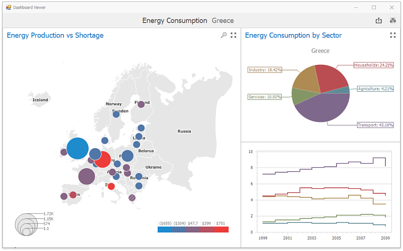

Dashboard Viewer
The Dashboard Viewer provides the capability to display dashboards in Windows Forms applications.

Data Presentation
The topics in this section provide information on how the Dashboard Viewer presents data.
Dashboard Parameters
This topic describes how to change dashboard parameter values.
Printing and Exporting
A Dashboard Viewer provides the capability to print or export both individual items of a dashboard, as well as the entire dashboard.
Dashboard Items
Dashboard items are used to present information in various ways.